VRayPhysicalCamera
VRayPhysicalCamera Overview
The VRayPhysicalCamera allows you to use real-world parameters to set up the virtual CG camera (e.g. f-stop, lens focal length, etc.). It also makes it easier to use light sources with real-world illumination (e.g . VRayLight with physical units, or VRaySun and VRaySky).
Basic Parameters
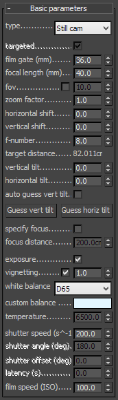
Type - determines the type of the camera. This mostly has an effect on the motion blur effect produced by the camera:
-
Still camera - simulates a still photo camera with a regular shutter.
-
Cinematic camera - simulates a motion-picture camera with a circular shutter.
-
Video camera - simulates a shutter-less video camera with a CCD matrix.
Targeted - specifies whether the camera has a target in the 3ds Max scene or not.
Film gate - specifies the horizontal size of the film gate in millimeters. Note that this setting takes into account the system units configuration to produce the correct result. Vertical film gate size is calculated by accounting image aspect ratio (vertical film size = horizontal film size / aspect ratio).
Focal length - specifies the equivalent focal length of the camera lens. This setting takes into account the system units configuration to produce the correct result.
fov - when enabled we can set the field of view directly without having to set up the film gate and focal length.
Zoom factor - specifies a zoom factor. Values greater than 1.0 zoom into the image; values smaller than 1.0 zoom out. This is similar to a blow-up rendering of the image.
Example: Zoom Factor
This parameter determines the zooming (In and Out) of the final image. It doesn't move the camera forward nor backwards.
Exposure is on, f-number is 8.0, Shutter speed is 60.0, ISO is 200.0, Vignetting is on, White balance is white.
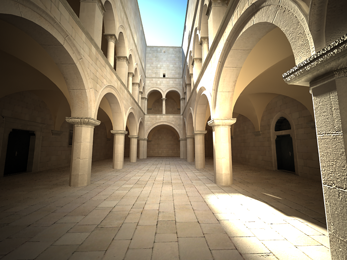
Zoom factor is 1.0
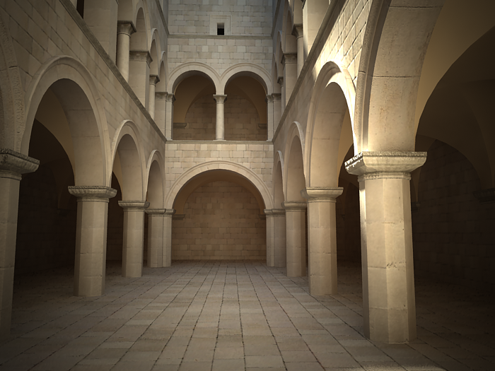
Zoom factor is 2.0
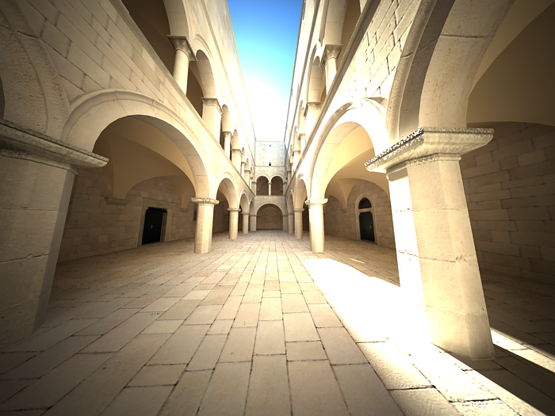
Zoom factor is 0.5
Horizontal shift - horizontally offsets the field of view of the camera as a fraction of the current view. For example, a value of 0.5 will offset the camera one-half of the current image width to the left.
Vertical shift - vertically offsets the field of view of the camera as a fraction of the current view. For example, a value of 0.5 will offset the camera one-half of the current image height upwards.
Target distance - the distance to the camera target for a targeted camera.
f-number - determines the width of the camera aperture and, indirectly, exposure. If the Exposure option is checked, changing the f-number will affect the image brightness.
Example: Exposure Control - f-number (f-stop)
Note: All the images from the following examples are rendered using the VRaySun and VRaySky set with their default parameters.
This parameter controls the aperture size of the virtual camera. Lowering the f-number value increases the aperture size and so makes the image brighter, since more light enters the camera. In reverse, increasing the f-number makes the image darker, as the aperture is closed. This parameter also determines the amount of the DOF effect, see
Example.
Exposure is on, Shutter speed is 60.0, ISO is 200, Vignetting is on, White balance is white.
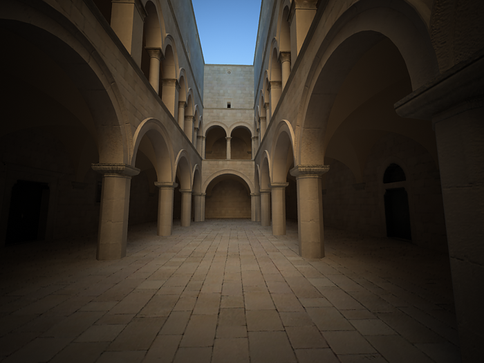
f-number is 8.0
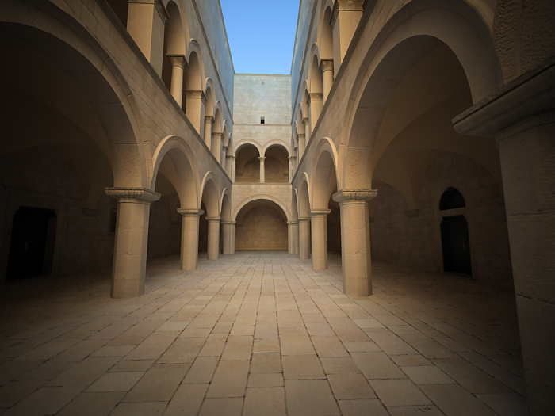
f-number is 6.0
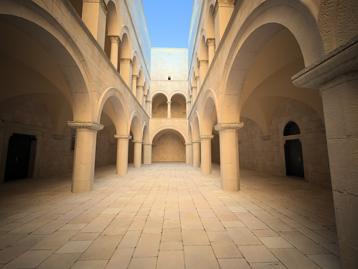
f-number is 4.0
Vertical tilt and Horizontal tilt - allow the simulation of tilt lenses for 2-point perspective. Changing these parameters is similar to applying a Camera correction modifier. Use the Guess vert and Guess horiz buttons in order to achieve the 2-point perspective.
Example: Vertical Tilt (Camera Correction)
Using this parameter you can achieve the so called " 2 point perspective ". To have that done automatically, use the Guess vertical tilt button.
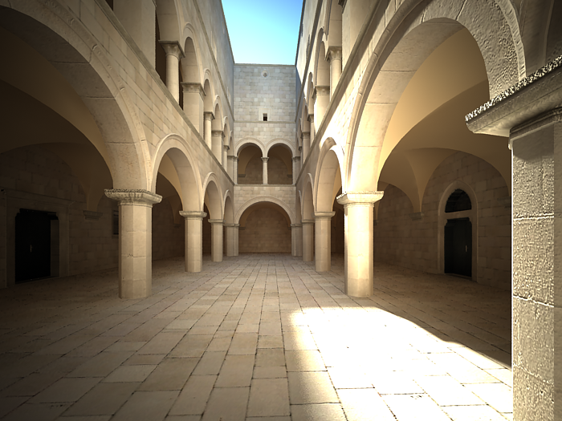
vertical tilt: Guess (2 point)
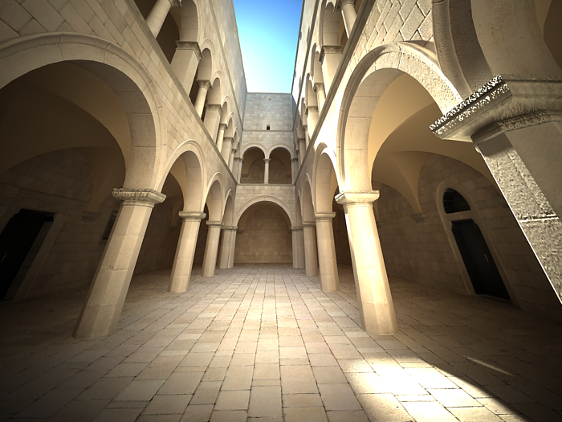
vertical tilt: -0.5
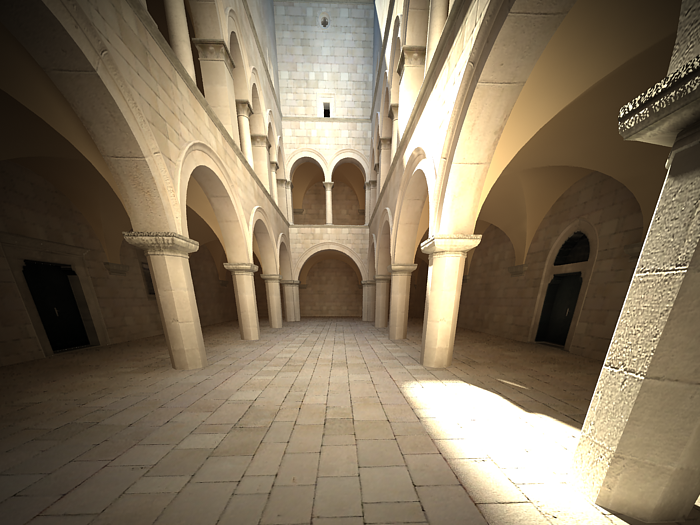
vertical tilt: 0.5
Auto guess vert... - enable this option to keep the vertical tilt when the camera is being animated.
Specify focus - this allows you to specify a focus distance different from the camera target distance.
Focus distance - the distance at which objects are in focus, if Specify focus is enabled.
Exposure - when this option is on, the f-number, Shutter speed, and ISO settings will affect the image brightness.
Example: Exposure, Field of View and Focus Distance
The focus distance of the physical camera (as specified by either the camera target distance or the Focus distance parameter) affects the exposure of the image and the field of view for the camera, especially if the focus distance is close to the camera. This is an effect than can be observed with real-world cameras as demonstrated in the images below.
The set up is a white board with a small black rectangle and a camera in front of it. Notice how changing the focus distance produces images with different brightness even though the illumination and all other camera parameters are the same in both cases. Also notice the change in the field of view.
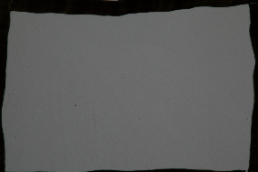
The camera is focused on the white board; the grey color is approximately RGB 104, 104, 104.
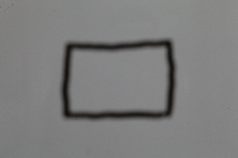
The camera is focused at infinity; they grey color is approximately RGB 135, 135, 135.
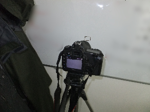
Side view of the camera focused on the white board.
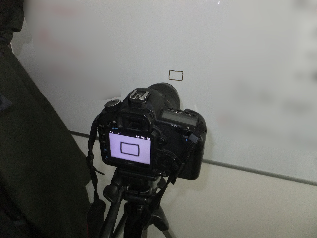
Side view of the camera focused at infinity.
Vignetting - when this option is on , the optical vignetting effect of real-world cameras is simulated. You can also specify the amount of the vignetting effect, where 0.0 is no vignetting and 1.0 is normal vignetting.
Example: Vignetting
This parameter controls the simulating the optical vignetting effect of real-world cameras.
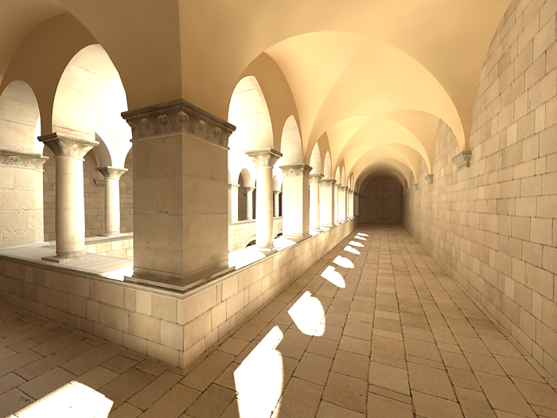
Vignetting is 0.0 (vignetting is disabled).
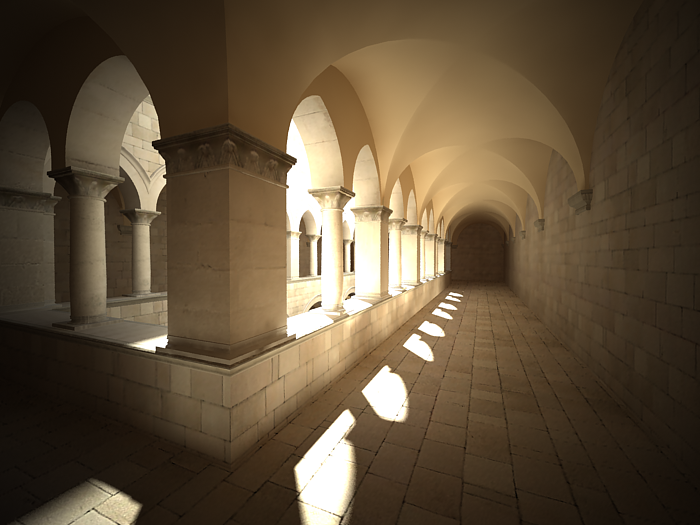
Vignetting is 1.0.
White balance - allows additional modification of the image output. Objects in the scene that have the specified color will appear white in the image. Note that only the color hue is taken into consideration; the brightness of the color is ignored. There are several presets that can be used, most notably the Daylight preset for exterior scenes.
Example: White Balance
Using the white balance color allows additional modification of the image output. Objects in the scene that have the specified color will appear white in the image. E.g. for daylight scenes this should be peach color to compensate for the color of the sun light etc.
Exposure is on, f-number is 8.0, Shutter speed is 200.0, ISO is 200.0, Vignetting is on.
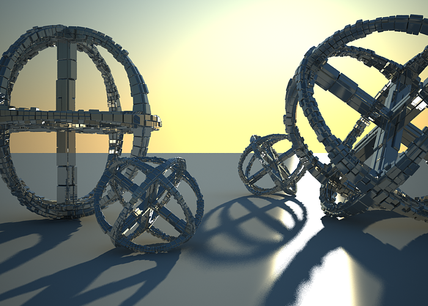 White balance is white (255, 255, 255).
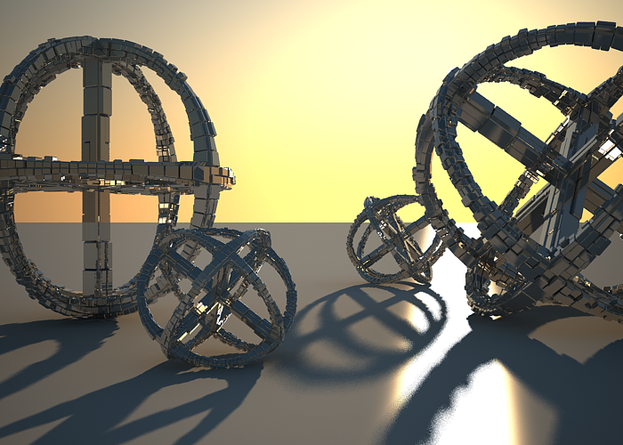 White balance is blueish (145, 65, 255).
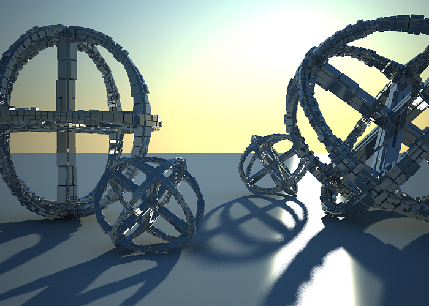 White balance is peach (20, 55, 245).
Shutter speed - the shutter speed, in inverse seconds, for the still photographic camera. For example, shutter speed of 1/30 s corresponds to a value of 30 for this parameter.
Example: Exposure Control - Shutter Speed
This parameter determines the exposure time for the virtual camera. The longer this time is (small Shutter speed value), the brighter the image would be. In reverse - if the exposure time is shorter (high Shutter speed value), the image would get darker. This parameter also affects the motion blur effect, see Example.
Exposure is on, f-number is 8.0, ISO is 200, Vignetting is on, White balance is white.
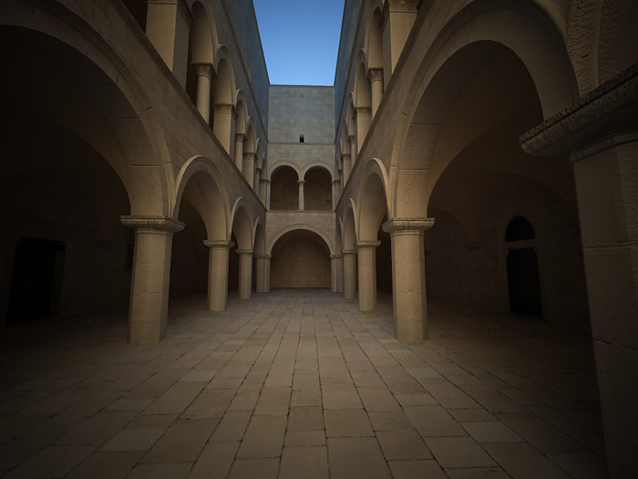
Shutter speed is 60.0.
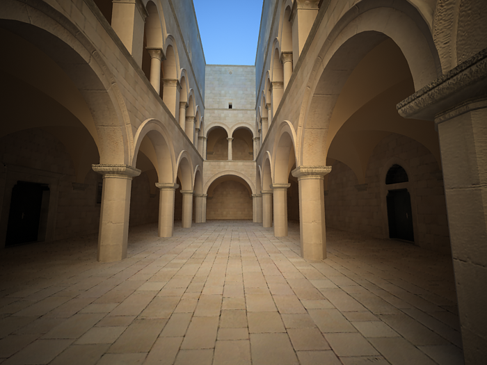
Shutter speed is 30.0.
om 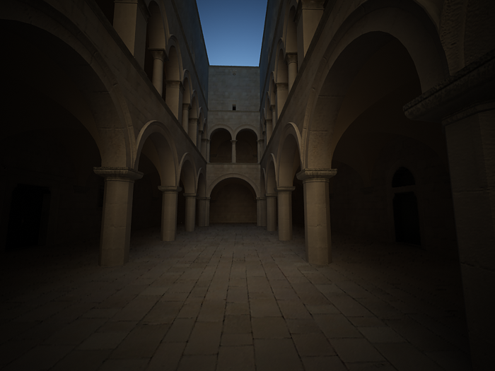
Shutter speed is 125.0.
Shutter angle - shutter angle (in degrees) for the cinematic camera.
Shutter offset - shutter offset (in degrees) for the cinematic camera.
Latency - CCD matrix latency, in seconds, for the video camera.
Film speed (ISO) - determines the film power (i.e. sensitivity). Smaller values make the image darker, while larger values make it brighter.
Example: Exposure Control: Film Speed (ISO)
This parameter determines the sensitivity of the film and so the brightness of the image. If the film speed (ISO) is high (film is more sensitive to the light), the image is brighter. Lower ISO values mean that the film is less sensitive and produces a darker image.
Exposure is on, Shutter Speed is 60.0, f-number is 8.0, Vignetting is on, White balance is white.
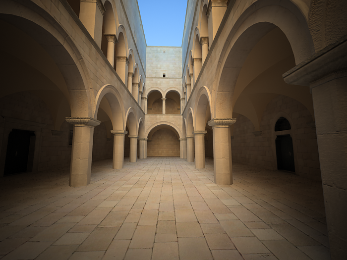
ISO is 400.
ISO is 800.
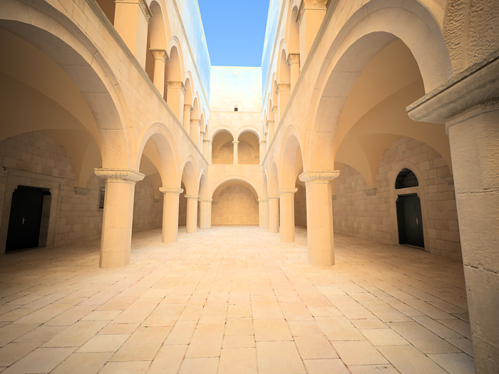
ISO is 1600.
Bokeh Effects
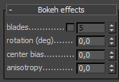 These parameters control the bokeh effects when the Depth-of-field option is on.
Blades - defines the shape of the camera aperture. When this option is off, perfectly circular aperture is simulated. When on, a polygonal aperture is simulated, with the given number of blades.
Rotation - defines the rotation of the blades.
Center bias - defines a bias shape for the bokeh effects. Positive values make the outer edge of the bokeh effects brighter; negative values make the center of the effect brighter.
Anisotropy - allows stretching of the bokeh effect horizontally or vertically to simulate anamorphic lenses.
Sampling Parameters
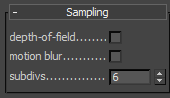 There parameters control the sampling for the virtual camera.
Depth-of-field - turns on depth of field sampling.
Example: Depth Of Field (DOF)
To enable the DOF effect you need to turn on the Depth-of-field option in the Sampling rollout of the physical camera. The effect is most strongly seen when the camera is close to some object, like when doing a "macro" photo. For a strong DOF effect, the camera aperture must be open wide (i.e. small f-number value). That may lead to a very burnt and bright image, so to preserve the same illuminosity over the whole image, the shutter speed must shortened. And at last but not at least the focus distance determines which part of the scene will be actually on focus. To get the focus near, you would need a small value and reverse - higher value for far focus.
Exposure is on, f-number is 1.0, Shutter speed is 4000.0, ISO is 200.0, Vignetting is on.
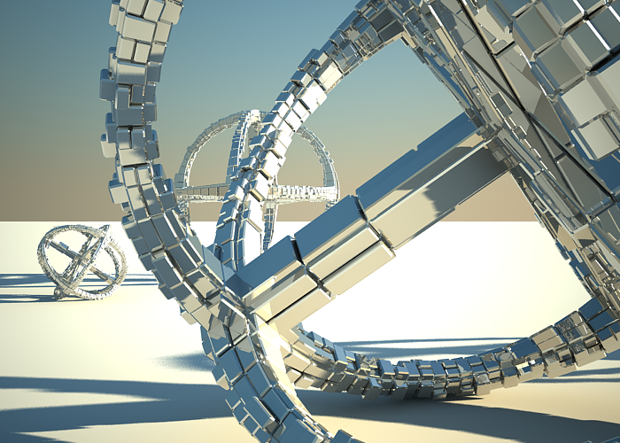
DOF is off.
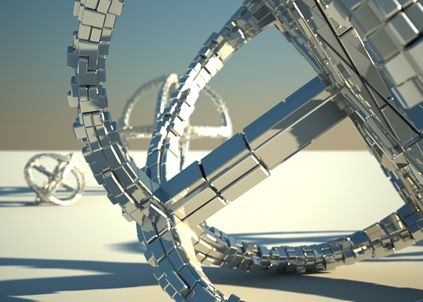
DOF is on, Focus distance is 400.
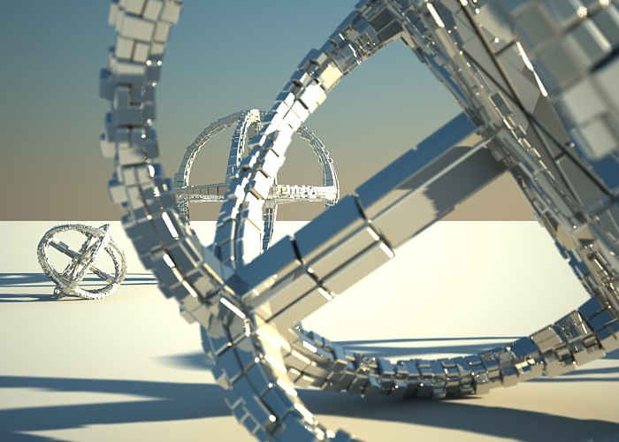
DOF is on, Focus distance is 4000.
Motion blur - turns on motion blur sampling.
Example: Motion Blur (MB)
To enable the motion blur effect, you need to turn on the Motion blur checkbox in the Sampling rollout of the physical camera. The amount of the motion blur is determined by the speed of the moving object itself as well as the Shutter speed setting of the camera. Long shutter speeds will produce more motion blur, as the movement of the object is tracked over a longer in time. In reverse, short shutter speeds will produce less motion blur effect. Keep in mind that to preserve the same illuminosity over the whole image, the f-number value has to be corrected as well.
Note that in the example the far object is moving quicker than the near one, which cases the difference in the motion blur effects.
Exposure is on, ISO is 200.0, Vignetting is on.
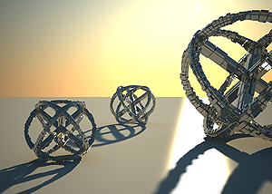
Motion blur is off.
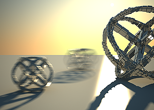
Motion blur is on, f-number is 16.0, Shutter speed is 30.0.
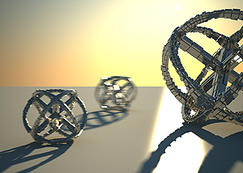
Motion blur is on, f-number is 8.0, Shutter speed is 125.0.
Subdivs - determines the number of samples (rays) for calculating depth of field and/or motion blur.
Distortion Parameters
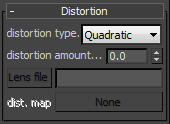 The options in this roll-out control the lens distortion of the camera.
Distortion type - this option allows you to choose how the distortion is determined.
-
Quadratic - this is the default distortion type. It uses a simplified formula that is easier to calculate than the Cubic method.
-
Cubic - this is the distortion type used in some camera tracking programs like SynthEyes, Boujou, etc. If you plan on using one of these programs, you should use the Cubic distortion type.
-
Lens file - a .lens file generated with the V-Ray Lens Analysis tool and specified in the Lens file field is used to control the distortion.
-
Texture - a texture file generated in a third party application (i.e. Nuke) and specified in the distortion map field is used to control the distortion.
Distortion amount - specifies the distortion coefficient for the camera lens when the Distortion type is set to either Quadratic or Cubic. A value of 0.0 means no distortion; positive values produce "barrel" distortion, while negative values produce "pillow" distortion.
Example: Distortion
The difference between the two types of distortion is slightly visible. The Cubic type should be used in some camera tracking programs like SynthEyes , Boujou, etc.
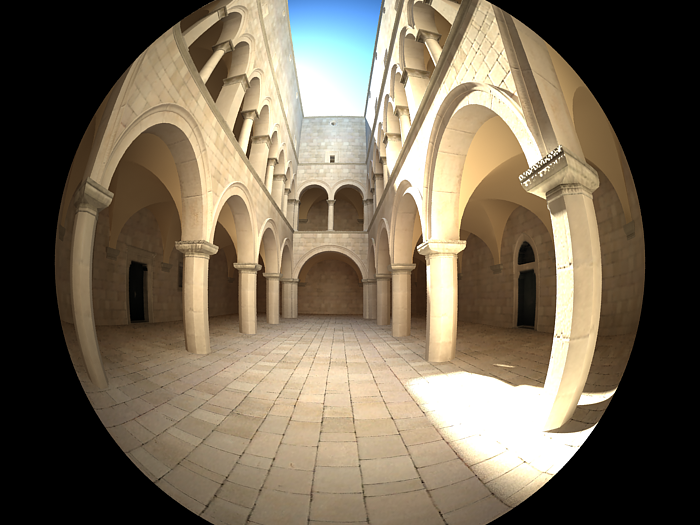
Distortion is 1.0, Distortion type is Quadratic.
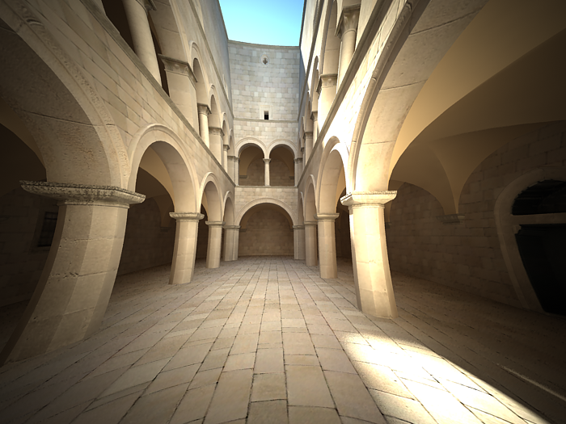
Distortion is -1.0, Distortion type is Quadratic.
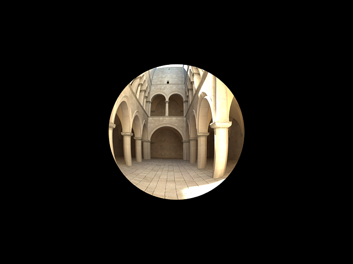
Distortion is 1.0, Distortion type is Cubic.
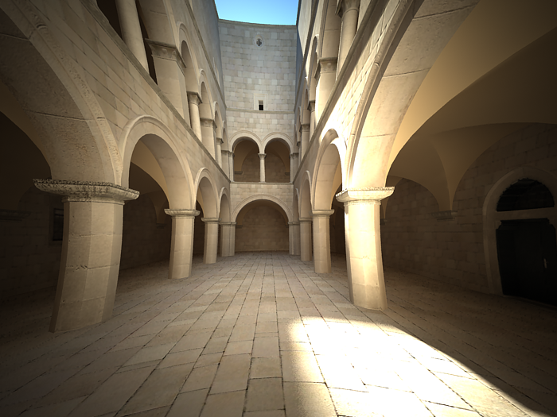
Distortion is -1.0, Distortion type is Cubic.
Miscellaneous
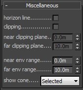 These parameters control various other aspects of the camera.
Horizon line - turns on and off the display of the camera horizon line in the view port.
Clipping - turns on and off camera clipping.
Near/far clipping range - the near/far clipping range, when Clipping is on.
Near/Far environment range - the near/far environment range (used by some atmospheric effects in 3ds Max).
show cone - controls whether and when to show a preview of the camera field of view and focus plane.
-
Selected - the preview is shown only when the camera is selected.
-
Always - the preview is constantly enabled.
-
Never - the preview is constantly disabled.
Notes
-
The Camera correction modifier will not work with the VRayPhysicalCamera. Instead, use the Vertical tilt parameter of the camera for the same purpose.
-
There are three types of FoV (field of view): horizontal, vertical, and diagonal. Horizontal FoV depends on the film gate size, focal length, focus distance, and zoom factor. In addition to those four parameters, the vertical and diagonal FoV depend on the image aspect ratio. The VRayPhysicalCamera always uses horizontal FOV.
-
The DOF settings in the Render Scene dialogue have no effect when the VRayPhysicalCamera is used. Instead, you must use the DOF settings of the camera itself.
-
Some motion blur settings (Duration, etc.) have no effect on the VRayPhysicalCamera. Instead, motion blur is controlled by the camera itself (through the Shutter speed, etc. parameters). See also th e Motion blur render parameters.